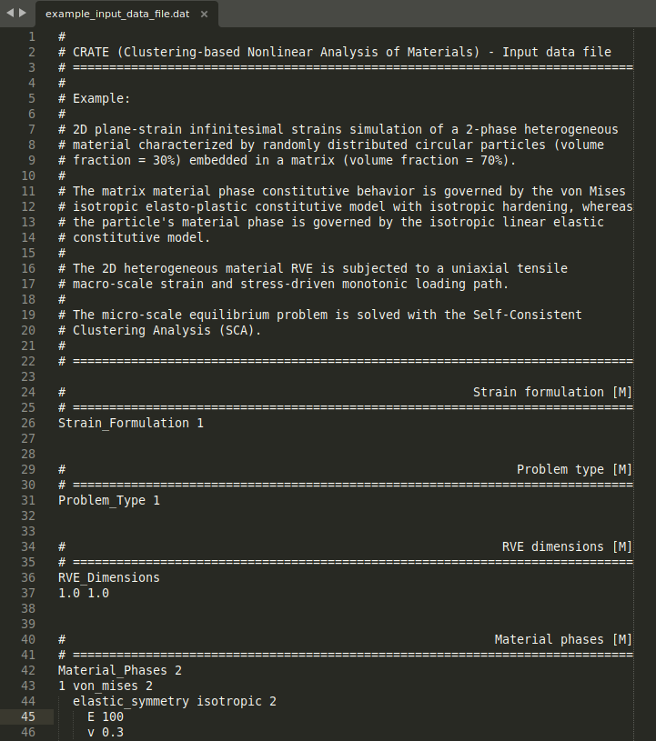

Step 2: Input data file¶
The second step to perform a CRATE simulation is to set up a user-defined input data file (.dat file).
The input data file contains all the required information about the problem (e.g., problem type, material properties, macro-scale loading path) and about the solution procedure (e.g., macro-scale loading incrementation, clustering-based domain decomposition, output options).
Note
The path of the RVE spatial discretization file (.rgmsh file) defined in Step 1 is specified in the input data file!
A complete template of CRATE’s user-defined input data file (input_data_file_template.dat) can be found in CRATE’s source code root directory (check CRATE GitHub repository). Besides including the full documentation of all available keywords (mandatory or optional), this template file can be copied to a given local simulation directory and be readily used by replacing the [insert here] boxes with the suitable specification.
Below are shown the first lines of a demonstrative user-defined input data file for the multi-scale analysis of the heterogeneous material illustrated in Step 1.
{kind=link}